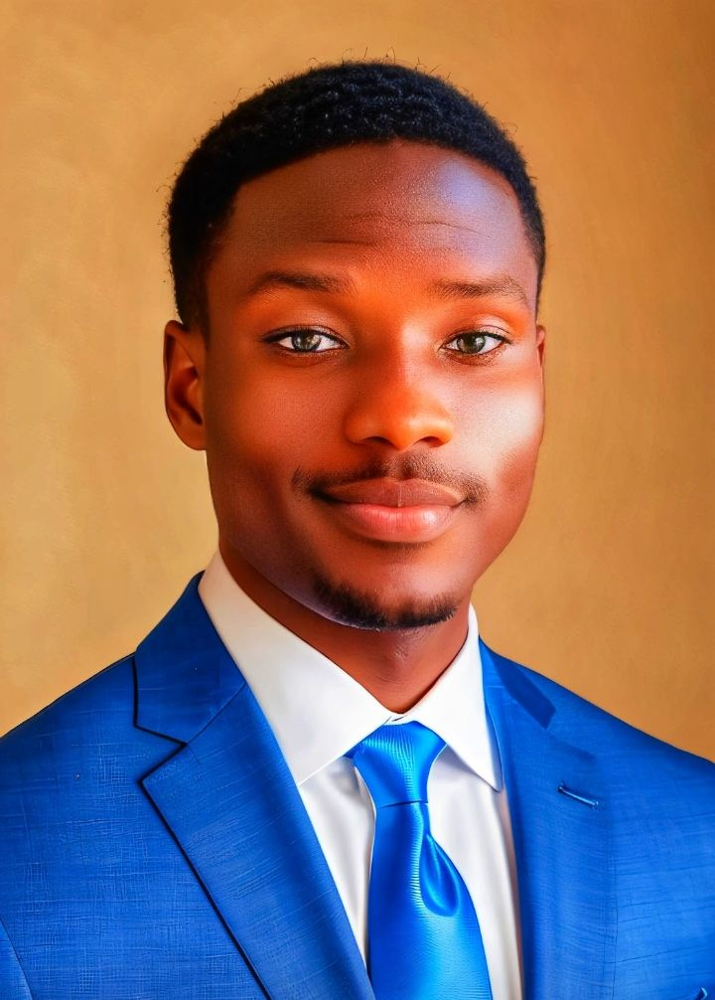

Oyebanji Olamide | WDD 130
Hello! My name is Oyebanji Olamide, a 21-year-old lifelong learner, innovator at heart, and proud native of Lagos, Nigeria — a city that pulses with energy, culture, and limitless ambition. Born and raised in the heart of one of Africa’s most dynamic urban centers, I’ve come to believe that growth is not just a destination, but a way of life. From an early age, I’ve been captivated by the power of knowledge — not just as a means to succeed, but as a tool to transform. Whether I’m exploring the mechanics of technology, diving into the depths of human behavior, or simply unraveling the “why†behind everyday things, I find fulfillment in understanding how the world works — and how I can contribute to making it better. Driven by curiosity and disciplined by purpose, I thrive on challenge, discovery, and impact. I believe learning should never be limited to classrooms or textbooks. It lives in conversations, in coding errors, in late-night questions, and in the “aha†moments that remind us we’re evolving. My approach to life is deeply rooted in this mindset: to keep learning, to stay curious, and to never stop asking, “What’s next?†Professionally, I aim to stand at the intersection of creativity and logic — merging the analytical with the imaginative. I’m drawn to fields where innovation meets real-world application, especially in technology, personal development, and problem-solving. I value systems that work, but I also challenge them to work better. I’m not afraid to get my hands dirty in the details, but I never lose sight of the bigger picture. I carry with me the resilience of Lagos, the restlessness of a learner, and the quiet confidence of someone who knows that potential means little without action. Whether I'm contributing to a team project, diving into a new subject, or building something from scratch, I bring a spirit of excellence, collaboration, and growth. To put it simply: I’m Oyebanji Olamide — curious by nature, driven by vision, and committed to leaving every space better than I found it.